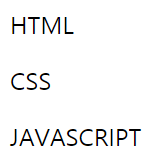
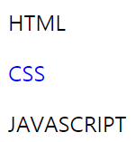
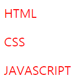
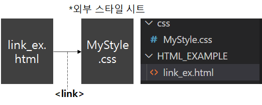
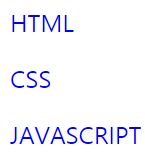

#1 Style
웹에서 Style 이란 HTML 문서에서 사용하는 글꼴, 정렬, 색상 등 문서의 겉모습을 결정짓는 것을 의미합니다.
HTML로는 웹 사이트의 내용을 나열하며, CSS로는 웹의 디자인을 구성하자는 아이디어가 웹표준의 시작이며, 이렇게 내용과 디자인을 구분해 두면, 사이트의 내용을 수정할 때 내용에 영향을 미치지 않고 디자인만 변경이 가능하기에 매우 편리합니다.
CSS의 기본 스타일 형식은 다음과 같습니다.
선택자 { 속성1: 속성값1; 속성2: 속성값2 }① 선택자 : 스타일을 어느 <태그>에 적용할 것인지 명시합니다. 예를들어 제목을 나타내는 <h1>태그에 스타일을 적용하고자 한다면, 선택자 부분에 h1을 적습니다.
② 속성&속성값 : 속성과 속성값을 합쳐서 스타일 규칙이라고 부르며, 세미콜론(;)으로 스타일 규칙을 구분합니다.
[EXAMPLE] h1태그의 색상을 파란색으로 바꾸는 CSS 소스 예제
h1{ color: blue }
#2 Style Sheet
웹 문서 안에서 스타일 규칙을 여러 개 사용하는데, 이러한 스타일 규칙들을 관리/수정하기 편하도록 한 군데에 묶어 놓은 것을 스타일 시트(Style Sheet)라고 부릅니다. 스타일 시트는 크게 <브라우저 기본 스타일>과 <사용자 스타일>로 나뉩니다.
<브라우저 기본 스타일>은 CSS를 따로 사용하지 않은 HTML코드라 하더라도, 기본적으로 웹 브라우저에서 표시해 주는 스타일 형식을 말합니다.

<사용자 스타일>은 프로그래머가 직접 만든 스타일 규칙을 의미하며, <사용자 스타일>은 다시 Inline Style Internal Style External Style로 나뉩니다.
#2.1 Inline Style
1. Inline Style이란, 간단한 스타일 정보를 표시할 때 스타일 시트를 따로 사용하지 않고, 적용하고자 하는 태그에 직접 표시하는 방식입니다. 사용 방법은 적용할 태그에 style 속성을 사용하여 style = "속성: 속성값" 형태로 스타일은 변경합니다.
다음은 인라인 스타일을 이용해 CSS의 글자색을 파란색으로 변경한 예제입니다.
생략...
<body>
<p>HTML</p>
<p style = "color: blue";>CSS</p>
<p>JAVASCRIPT</p>
</body>
...
#2.2 Internal Style
2. Internal Style이란, 스타일과 웹문서의 내용을 같은 문서에 정리한 것을 의미하며, 다수의 태그에 스타일 규칙을 적용할 때 사용하는 방식입니다. 모든 스타일 규칙은 <head>태그 안에서 정의해야 하고, <style> ~ </style> 태그 사이에 작성해야 합니다.
다음은 내부 스타일 시트를 이용해 모든 <p>태그의 글자색을 붉은색으로 변경한 예제입니다.
<!DOCTYPE html>
<html lang="ko">
<head>
<meta charset="UTF-8">
<title>Style_Example</title>
<style>
p{ color: red }
</style>
</head>
<body>
<p>HTML</p>
<p>CSS</p>
<p>JAVASCRIPT</p>
</body>
</html>
#2.3 External Style
3. External Style이란, 스타일과 웹문서의 내용을 다른 문서에 정리한 것을 의미합니다.
대부분 홈페이지를 제작할 때는 <외부 스타일 시트>방식을 사용하며, 외부 스타일 시트는 *.css확장자를 사용합니다.
외부 스타일 시트 파일에 CSS코드를 작성할 때는 따로 <style> ~ </style> 태그를 사용할 필요가 없습니다.
웹 문서의 내용이 저장되어 있는 HTML파일과 외부 스타일 시트 파일을 연결할 때에는 <link>태그를 사용하여 연결합니다.
<link>태그의 기본형은 다음과 같습니다.
<link rel = "stylesheet" href = "외부 스타일 시트 경로">
다음은, HTML파일과 CSS파일(외부 스타일 시트)를 연결한 예제입니다. 참고로 <link>태그는 <head> ~ </head>태그 안에 정의합니다.
/* MyStyle.css */
p{
color: blue;
}/* link_ex.html */
<!DOCTYPE html>
<html lang="ko">
<head>
<meta charset="UTF-8">
<title>Link_Example</title>
<link rel = "stylesheet" href = "/css/MyStyle.css">
</head>
<body>
<p>HTML</p>
<p>CSS</p>
<p>JAVASCRIPT</p>
</body>
</html>
앞서 소개한 세 가지 사용자 스타일 (1.Inline Style , 2. Internal Style , 3. External Style) 중 Inline Style과 Internal Style을 이용한 방식은 사용하지 않는 것을 추천합니다.
왜냐하면 Inline Style과 Internal Style 방식을 이용해 CSS를 작성하는 경우 HTML 문서 안에 CSS 문서가 얽히기에 나중에 CSS 코드가 늘어나면 늘어날수록 리팩토링을 하기에 매우 불편해 지기 때문입니다.
따라서, External Style 방식을 이용해 HTML문서와 CSS파일을 완전히 분리해서 코드를 작성해야 합니다.